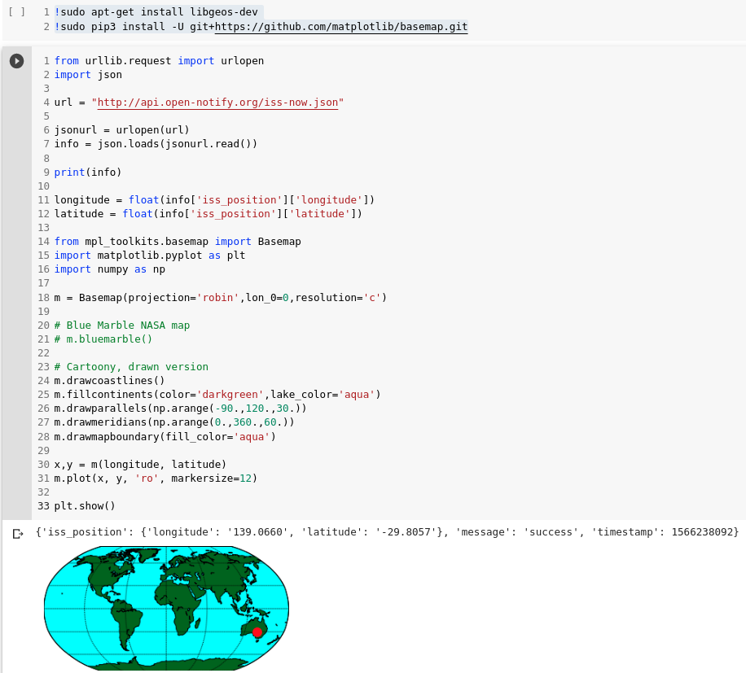

Table of Contents
By the end of this workshop, you will learn how to use an API in Python.
APIs, or Application Program Interfaces allow a programmer to access an application's services, like certain functions or data. Today we'll primarily focus on web-based APIs, that you can query to receive some information.
APIs are super cool because they allow your program to know about and interact with the real world. For example, you can make an app that recommends uniquely generated taco recipes based on the weather, utilising just two APIs.
Before we continue, if you haven't already, follow this workshop on how to set up Google Colab:
Here's a list of public, free to use APIs. After following this workshop, feel free to come back to this list and browse through some that you might like! For now we'll focus on an International Space Station location API.
We'll be using this API:
Feel free to see the documentation, which is just a guide on how to use the API. However, for this workshop you won't need to look at the documentation yourself.
We'll now query the API using Python. It's important that you do NOT copy and paste. You will learn better if you type it all out by hand!
First, we'll import the libraries urllib and json. Open up the new notebook you created in Google Colab, and type the following code:
from urllib.request import urlopen
import json
Then we'll query the API and parse the text into a JSON and print it.
url = "http://api.open-notify.org/iss-now.json"
jsonurl = urlopen(url)
info = json.loads(jsonurl.read())
print(info)
What this code does is open the link, get the content using REST, and stores it in the info variable. Now try running the code! By clicking the play button on the left.
You should get some JSON code that looks something like this:
{
"message": "success",
"iss_position": {
"longitude": "-143.7306",
"latitude": "19.7888"
},
"timestamp": 1566179827
}
JSON, or JavaScript Object Notation is basically a standardized way for apps to communicate. You can think of it like a dictionary. In a dictionary, you look up a word and the dictionary gives you a definition. In a JSON, we will refer to it as a key and value.
You can learn more about JSONs here:
For now, all we have to know is how to read this dictionary. In python, square brackets allow you to access elements within a variable. So to get the latitude and longitude of the International Space Station, all we have to type is:
longitude = info['iss_position']['longitude']
latitude = info['iss_position']['latitude']
print(longitude)
print(latitude)
To interpret this code, I am accessing the value of the key, iss_position. I then access the value, which in my case is -143.7306, of the key within, longitude. That might be a little bit confusing, so here's an image that might help you understand. Don't worry if you don't understand how JSONs work yet, we won't need to fully understand how they work for this workshop. If you're still curious, go back here to explore JSONs more in depth.
You've successfully queried and interpreted a JSON! Now let's find out how we can turn this information into something more visual.
Since we'll need two other libraries for this implementation, click the '+ Code' button on the top left corner of the page to create a new code box, and type in the newly created code box:
!sudo apt-get install libgeos-dev
!sudo pip3 install -U git+https://github.com/matplotlib/basemap.git
Run this code by clicking the play button on the left. Now we'll add the imports to the main code box:
from urllib.request import urlopen
import json
url = "http://api.open-notify.org/iss-now.json"
jsonurl = urlopen(url)
info = json.loads(jsonurl.read())
print(info)
longitude = float(info['iss_position']['longitude'])
latitude = float(info['iss_position']['latitude'])
from mpl_toolkits.basemap import Basemap
import matplotlib.pyplot as plt
import numpy as np
This imports the basemap package which we will use to plot where the ISS is on the map, as well as matplotlib, the library it is based on, which we will use to manipulate the map. Finally, we import numpy, a python math library to help with some more cosmetic stuff.
Now we'll generate the actual map:
m = Basemap(projection='robin',lon_0=0,resolution='c')
You have two options here, you can make a realistic photo version of the map made by NASA called Blue Marble, or a drawn cartoony version of the map. I'll leave both options with the corresponding colours, but you can only use either one:
m.bluemarble()
m.drawcoastlines()
m.fillcontinents(color='darkgreen',lake_color='aqua')
m.drawparallels(np.arange(-90.,120.,30.))
m.drawmeridians(np.arange(0.,360.,60.))
m.drawmapboundary(fill_color='aqua')
Finally we plot where the ISS is and show the map:
x,y = m(longitude, latitude)
m.plot(x, y, 'ro', markersize=12)
plt.show()
That's it! You've finished the workshop. Good job! You can now press play however many times you want and see the position update in real time. Your code should look something like this in the end:
